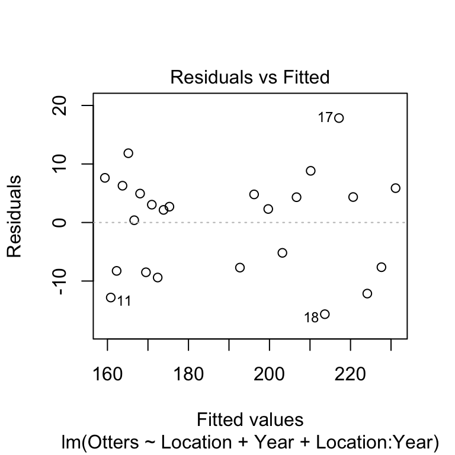
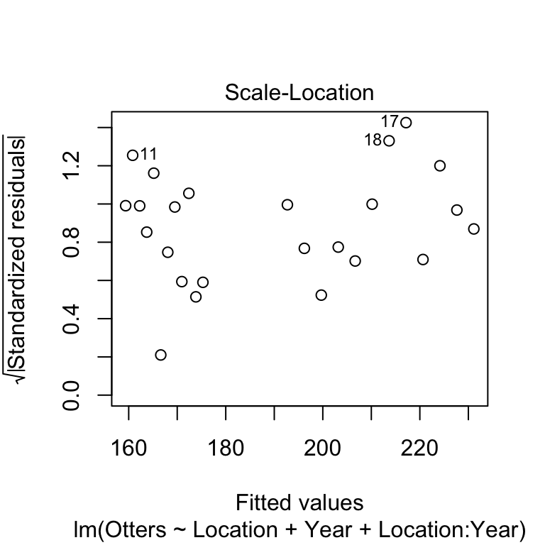

Chapter 29 Two-way ANCOVA in R
29.1 Introduction
We’ll use the sea otter predation example from the previous chapter to walk through how to carry out an ANCOVA in R.
Walk through example
You should begin working through the example from this point.
You need to download the OTTERS.CSV file from MOLE and place it in your working directory. Read the data into an R data frame, giving it the name seaotters. Make sure you have a look at the data before you proceed.
The data are laid out with the response variable in one column and two additional columns for the predictor variables: one contains the codes for the categorical variable, the other contains the values of the numeric variable. Thus, the first column (Otters) contains the sea otter abundances, the second column (Location) contains the codes for the study population (levels: ‘Lagoon’ and ‘Bay’), and the third column (Year) contains the observation year (1993-2004).
29.2 Visualising the data
As always we should start by visualising our data.
ggplot(seaotters, aes(x = Year, y = Otters, colour = Location)) +
geom_point()
As we noted in the previous chapter the figure suggestes that sea otter abundances have declined in both locations, with a greater decline where sea otters were exposed to predation from killer whales (the bay location).
We should also consider the assumptions of the ANCOVA. The scatter plot suggests that, within each location, the relationship between \(x\) and \(y\) is linear. The numeric predictor variable (study year) is measured on an interval scale and the response variable (otter abundance) is measured on ratio scale. Year is obviously measured without error. What about the independence assumption?
Independence
Can you think of any reasons why the independence assumption may be problematic in this example? Think about how the data have been collected—they are a time series of abundances in a pair of adjacent populations.
We’ll assume the independence assumption has been met in these data. As with regression, the remaining assumptions are probably best measured using regression diagnostics after we’ve fitted the model.
29.3 Fitting an ANCOVA
As you should expect by this point, carrying out ANCOVA in R is a two step process. The first step is the model fitting step. This is where R calculates the best fit intercepts and slopes for each group (i.e. each location in this example), along with additional information needed to carry out the evaluation of significance in step two.
We carry out the model fitting step using the lm function:
otters.model <- lm(Otters ~ Location + Year + Location:Year, data = seaotters)This is just more of the same old model fitting with lm. We assigned two arguments:
The first argument is a formula. The variable name on the left of the
~must be the response variable (Otters) and the terms on the right must only include the two predictor variables (LocationandYear).The second argument is the name of the data frame that contains the variables listed in the formula (
seaotters).
Let’s unpack the formula we used:
Otters ~ Location + Year + Location:YearThere are three terms, each separated by a + symbol: the two main effects (Location and Year) and their interaction (Location:Year). This tells R that we want to fit a model accounting for the main effects of study location and year, but that we also wish to include the interaction between these two variables. The Location term allows each line to cross the y-axis at a different point, the Year term allows the effect of year (the slope) to be non-zero, and the interaction term allows this slope to be different in each location.
How does R knows we want to carry out ANCOVA?
Notice how similar fitting this ANCOVA was to fitting a two-way ANOVA. How does R know we want to use ANCOVA? You should be able to answer this question. R looks at what type of variables are on the right had side of the ~ in the formula. Since Location is a factor and Year is numeric, R fits an ANCOVA model. If both variables had been factors we fit a two-way ANOVA, and if both variables were numeric we would fit something called a multiple regression model.
29.4 Diagnostics
Before we go on to look at the p-values we should check the remaining assumptions using the diagnostics. We’ll make the same plots as if we’d fitted a linear regression. First we’ll evaluate the linearity assumption by constructing a residuals vs. fitted values plot.
plot(otters.model, add.smooth = FALSE, which = 1)
There’s no evidence of a systematic trend here so the linearity assumption is fine. We’ll move on to the normality assumption next, by making a normal probability plot.
plot(otters.model, which = 2)
This doesn’t look great, very few of the points are on the dashed line and there appears to be a systematic trend away from the line. We’ll carry on for now as we’re just using this as an example of how to carry out an ANCOVA. If we were really interested in the results of this analysis we should consider transforming our response variable.
Normality assumption
Can you think of any reason that we might expect the residuals in these data not to be normally distributed? What kind of transformation might help?
Finally, we’ll consider the constant variance assumption using the scale location plot.
plot(otters.model, add.smooth = FALSE, which = 3)
Here, we’re on the lookout for a systematic pattern in the size of the residuals and the fitted values—does the variability go up or down with the fitted values? There doesn’t appear to be a strong pattern here.
29.5 Interpreting the results
Next, we use the anova function to determine whether the main effects and the interaction are significant, by passing it the name of the fitted regression model object (otters.model):
anova(otters.model)## Analysis of Variance Table
##
## Response: Otters
## Df Sum Sq Mean Sq F value Pr(>F)
## Location 1 11926.0 11926.0 139.3894 1.811e-10 ***
## Year 1 1745.3 1745.3 20.3982 0.0002106 ***
## Location:Year 1 299.1 299.1 3.4964 0.0762142 .
## Residuals 20 1711.2 85.6
## ---
## Signif. codes: 0 '***' 0.001 '**' 0.01 '*' 0.05 '.' 0.1 ' ' 1The first line reminds us that we are looking at an ANOVA table. Remember, this doesn’t necessarily mean we are dealing with an ANOVA model—we are definitely examining an ANCOVA here. The second line reminds us what variable we analysed (i.e., the response variable). The critical part of the output is the table at the end:
## Df Sum Sq Mean Sq F value Pr(>F)
## Location 1 11926.0 11926.0 139.3894 1.811e-10 ***
## Year 1 1745.3 1745.3 20.3982 0.0002106 ***
## Location:Year 1 299.1 299.1 3.4964 0.0762142 .
## Residuals 20 1711.2 85.6This summarises the parts of the analysis of variance calculations, as they apply to ANCOVA. These are: Df – degrees of freedom, Sum Sq – the sum of squares, Mean Sq – the mean square, F value – the F-statistic (i.e. variance ratio), Pr(>F) – the p-value).
The F-statistics (variance ratios) are the key terms. When working with an ANCOVA, these relate to how much variability in the data is explained when we include each term in the model, taking into account the degrees of freedom it ‘uses up’. Larger values indicate a stronger effect. The p-value gives the probability that the relationship could have arisen through sampling variation, if in fact there were no real association: a p-value of less than 0.05 indicates a less than 1 in 20 chance of the result being due to chance, and we take this as evidence that the relationship is real.
We need to interpret these p-values. The two main effects are significant (p<0.001), but the interaction is not (p=0.076). An ANOVA table tells us nothing about the direction of the effects—we have to plot the data to be able to do this. If we look back at the scatter plot, it is apparent that the significant main effects are supporting the observation that otter abundances are higher in the bay area, and that in general, otter abundances have declined over the course of the study. The interaction term is non-significant—though we only just missed the conventional p<0.05 cut off. We are forced to conclude that the data do not support the hypothesis that the population abundances in each location have declined by different amounts.
29.6 Presenting the results
We will need to provide a succinct factual summary of the analysis in the results section of the report:
There were significant effects of location (ANCOVA: F=139.4, df=1,20, p<0.001) and year (F=20.4; df=1,20; p<0.001) on sea otter abundance. The interaction between location and year was not significant (F=3.5, df=1,20, p=0.076). Sea otter abundances were generally higher in Handae Bay, but declined by a similar amount in both locations during the study (Figure 1).
Notice that we never referred to ‘treatments’ in this summary. It does not make any sense to describe the variables in this data set as treatments, as we are describing the results from an observational study. Of course, there is nothing to stop us using ANCOVA to analyse experimental data if it is appropriate.
For presentation it is best to present the results as a figure. We can produce publication quality figure to summarise ANCOVA in much the same way as we summarise a fitted regression model. We are aiming to produce a figure that shows two pieces of information: a scatter plot and lines of best fit. We also want to differentiates the data and best fit lines for each location. We know how to produce a scatter plot, so the main challenge is to add the lines of best fit. We use the predict function to do this.
To use predict, we have to let R know the set of values of the two predictor variables for which we want predictions (Location and Year). Sea otter abundances were evaluated from 1992 to 2003, so it makes sense to predict their abundances over this range. We also need to make distinct predictions for each location (‘Lagoon’ and ‘Bay’). Therefore, the first step in making predictions is to generate a sequence of values for Year from 1992 to 2003 for each location, placing these alongside a location indicator inside a data frame. We have to use a new function, expand.grid, to do this:
pred.data <- expand.grid(Year = 1992:2003, Location = c("Lagoon", "Bay"))Remember that 1992:2003 produces a numeric vector in which the elements are a sequence of integers (‘whole numbers’) running from 1992 to 2003.
That probably looks very cryptic at the moment. Look at pred.data:
pred.data## Year Location
## 1 1992 Lagoon
## 2 1993 Lagoon
## 3 1994 Lagoon
## 4 1995 Lagoon
## 5 1996 Lagoon
## 6 1997 Lagoon
## 7 1998 Lagoon
## 8 1999 Lagoon
## 9 2000 Lagoon
## 10 2001 Lagoon
## 11 2002 Lagoon
## 12 2003 Lagoon
## 13 1992 Bay
## 14 1993 Bay
## 15 1994 Bay
## 16 1995 Bay
## 17 1996 Bay
## 18 1997 Bay
## 19 1998 Bay
## 20 1999 Bay
## 21 2000 Bay
## 22 2001 Bay
## 23 2002 Bay
## 24 2003 BayThe expand.grid produced a data frame with two variables called Year and Location. The rows of the data frame represent every pairwise combination of the two sets of values (i.e. the vectors) we passed to expand.grid. Notice that we gave the two arguments of expand.grid the exact same names as the predictor variables in the ANCOVA. This is important: the names in pred.data have to match the names of the predictor variables used in model, and every variable in the model has to be represented in pred.data.
The next step is the same as the regression example. Once we have set up a data frame to predict from (pred.data) we are ready to use the predict function. We need to capture the predictions inside a data frame using mutate:
pred.data <- mutate(pred.data, Otters = predict(otters.model, pred.data))Look at the resulting data frame:
pred.data## Year Location Otters
## 1 1992 Lagoon 175.2949
## 2 1993 Lagoon 173.8473
## 3 1994 Lagoon 172.3998
## 4 1995 Lagoon 170.9522
## 5 1996 Lagoon 169.5047
## 6 1997 Lagoon 168.0571
## 7 1998 Lagoon 166.6096
## 8 1999 Lagoon 165.1620
## 9 2000 Lagoon 163.7145
## 10 2001 Lagoon 162.2669
## 11 2002 Lagoon 160.8193
## 12 2003 Lagoon 159.3718
## 13 1992 Bay 231.1282
## 14 1993 Bay 227.6352
## 15 1994 Bay 224.1422
## 16 1995 Bay 220.6492
## 17 1996 Bay 217.1562
## 18 1997 Bay 213.6632
## 19 1998 Bay 210.1702
## 20 1999 Bay 206.6772
## 21 2000 Bay 203.1841
## 22 2001 Bay 199.6911
## 23 2002 Bay 196.1981
## 24 2003 Bay 192.7051Notice that we gave the predictions the same name as the response variable in our ANCOVA model. This is convenient, because it means we don’t have to set up any new aesthetic mappings when we use ggplot2 in a moment. Notice that pred.data is set out just like the data frame containing the study data. It has three columns called Otters, Location and Year, but instead of raw data, it contains predictions from the model.
Plotting these predictions along with the data is now very easy:
ggplot(pred.data, aes(x = Year, y = Otters, colour = Location)) +
geom_line() + geom_point(data = seaotters) +
xlab("Year") + ylab("Sea Otter Abundance") Don’t forget: we have to make
Don’t forget: we have to make ggplot2 use the seaotters data (i.e. the raw data) when adding the points.
Let’s summarise what we did: 1) using expand.grid, we made a data frame with two columns containing the values of the predictor variables we want to make predictions at; 2) we then used predict to generate these predictions, adding them to the prediction data with mutate; 3) finally, we used ggplot2 to plot the predicted values of the response variable against the numeric predictor variable, colouring the lines and points differently for each location.
This workflow is almost identical to that used to summarise a regression model—the only new trick here was the use of expand.grid to deal with the fact that now we have to manage two predictor variables.